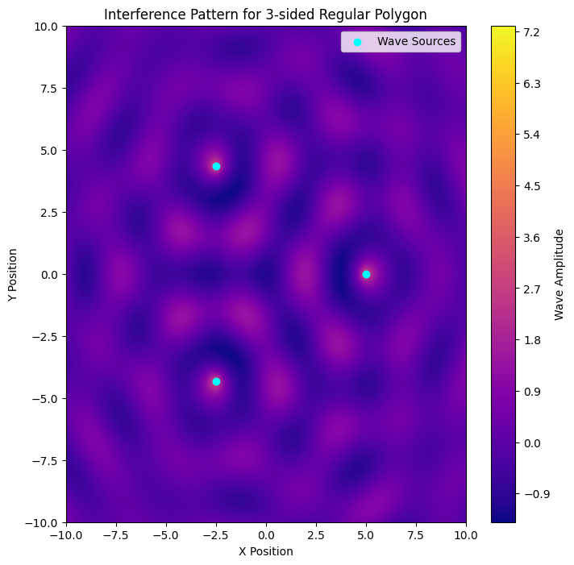
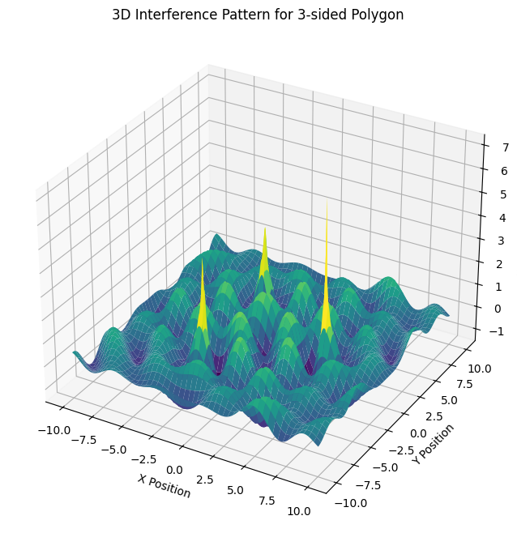
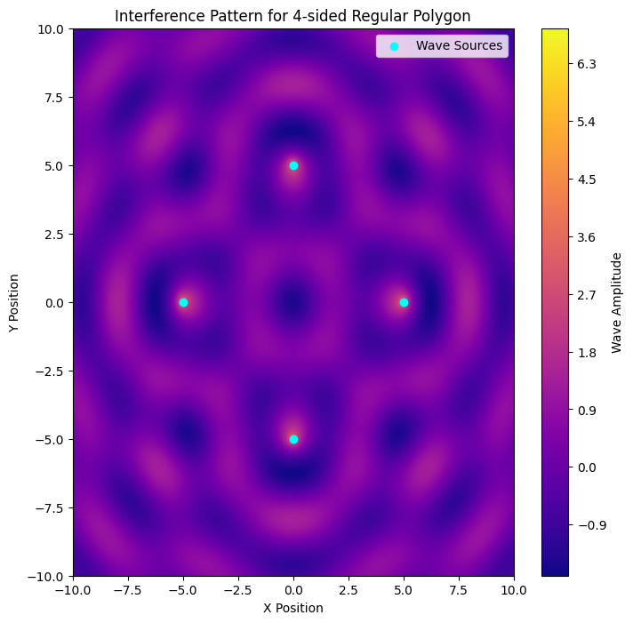
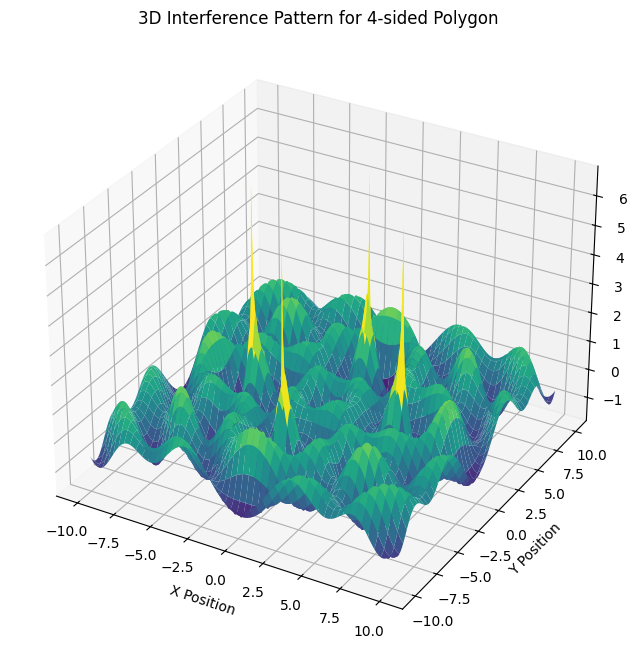
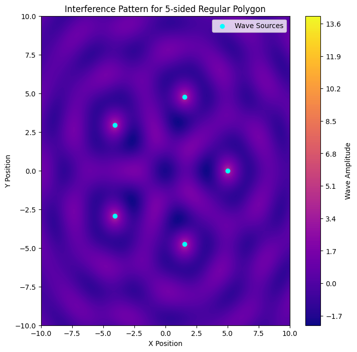
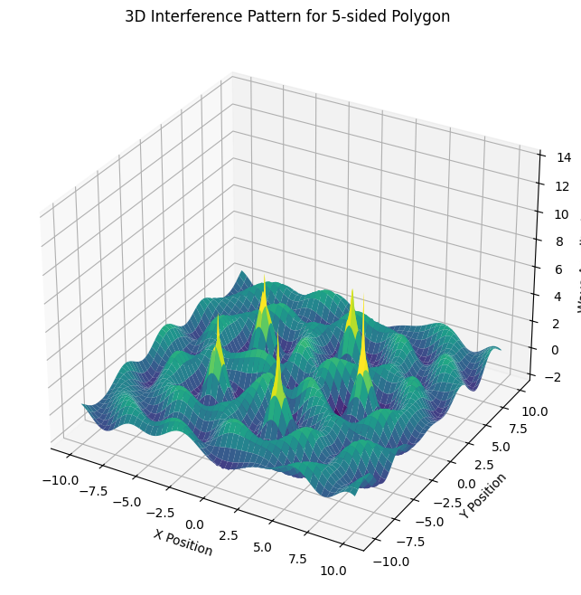

Problem 1
Wave Interference from Multiple Sources
1. Wave Equation for a Single Point Source
A single point source at position \( (x_0, y_0) \) emits a circular wave described by:
where:
- \( A \) is the amplitude of the wave.
- \( k = \frac{2\pi}{\lambda} \) is the wave number, related to the wavelength \( \lambda \).
- \( \omega = 2\pi f \) is the angular frequency, where \( f \) is the frequency.
- \( r = \sqrt{(x - x_0)^2 + (y - y_0)^2} \) is the distance from the source to a given point \( (x, y) \).
- \( \phi \) is the initial phase.
This equation represents a water surface disturbance that propagates outward in circular waves, decreasing in amplitude with distance \( \left(\frac{1}{r}\right) \) due to energy spreading.
2. Superposition of Waves from Multiple Sources
When multiple point sources exist, the total displacement at a point \( (x, y) \) is the sum of all individual wave contributions:
where:
- \( N \) is the number of wave sources.
- \( r_i = \sqrt{(x - x_i)^2 + (y - y_i)^2} \) is the distance from the \( i \)-th source to the point \( (x, y) \).
Each wave contributes to the overall displacement at \( (x, y) \), and depending on their phase relationships, interference occurs.
3. Positioning of Wave Sources on a Regular Polygon
To analyze interference patterns, we position wave sources at the vertices of a regular polygon centered at the origin. The coordinates of each vertex are:
where:
- \( R \) is the radius (distance from the center to a vertex).
- \( i = 0, 1, 2, \dots, N-1 \) (index of each vertex).
- \( N \) is the number of vertices (sides of the polygon).
For example:
- Triangle (N = 3): Three wave sources positioned at \( 120^\circ \) intervals.
- Square (N = 4): Four sources positioned at \( 90^\circ \) intervals.
- Pentagon (N = 5): Five sources at \( 72^\circ \) intervals, and so on.
4. Understanding Interference Patterns
When multiple sources emit waves simultaneously, they interact in specific ways:
(a) Constructive Interference (Amplification)
Occurs when waves meet in phase, reinforcing each other. This happens at points where:
These regions appear as bright or high-amplitude areas in a graphical representation.
(b) Destructive Interference (Cancellation)
Occurs when waves meet out of phase, canceling each other. This happens when:
These regions appear as dark or low-amplitude areas.
(c) Interference Patterns Based on Polygon Type
Each polygon has a unique interference pattern due to differences in source placement:
- Equilateral Triangle (N=3): The pattern forms a six-fold symmetry with alternating constructive and destructive regions. Interference creates concentric and radial symmetry around the center.
- Square (N=4): The waves form a checkerboard-like pattern with alternating constructive/destructive zones. High symmetry along the diagonal and central axes.
- Pentagon (N=5): More complex interference with star-like patterns emerging. Interference fringes appear denser near the center.
- Higher N (e.g., Hexagon, Octagon): More sources lead to denser, intricate patterns. Constructive regions form spiral-like or web-like structures.
5. Observing Interference Patterns Graphically
By evaluating \( \eta\_{\text{sum}}(x, y, t) \) over a grid of \( (x, y) \) points and plotting it as a contour map, we can visualize the interference pattern. In these plots:
- Bright areas indicate constructive interference.
- Dark areas indicate destructive interference.
This graphical approach helps in understanding:
- How waves reinforce or cancel out.
- The role of phase differences in pattern formation.
- The impact of increasing the number of sources.
Conclusion
Interference patterns arise due to the superposition of waves from multiple sources. Different regular polygons produce distinctive and symmetrical patterns. Constructive interference creates bright regions (high amplitude), while destructive interference results in dark regions (low amplitude). By analyzing these patterns, we gain insight into wave physics, coherence, and superposition principles.
import numpy as np
import matplotlib.pyplot as plt
from mpl_toolkits.mplot3d import Axes3D
import matplotlib.animation as animation
def wave_interference_polygon(sides=3, radius=5, A=1, k=2, w=2*np.pi, resolution=500, time=0):
"""
Simulates wave interference from sources placed at the vertices of a regular polygon.
Parameters:
- sides: Number of sides of the regular polygon
- radius: Distance from the center to each vertex
- A: Amplitude of the waves
- k: Wave number (related to wavelength)
- w: Angular frequency
- resolution: Grid resolution for visualization
- time: Time instance for animation purposes
"""
# Define spatial domain
x = np.linspace(-radius*2, radius*2, resolution)
y = np.linspace(-radius*2, radius*2, resolution)
X, Y = np.meshgrid(x, y)
# Compute source positions (polygon vertices)
angles = np.linspace(0, 2*np.pi, sides, endpoint=False)
sources = [(radius * np.cos(a), radius * np.sin(a)) for a in angles]
# Superpose waves from all sources
eta_sum = np.zeros_like(X)
for (x0, y0) in sources:
r = np.sqrt((X - x0)**2 + (Y - y0)**2)
eta_sum += A * np.cos(k * r - w * time) / np.sqrt(r + 1e-6) # Small value avoids division by zero
# 2D Contour Plot
plt.figure(figsize=(8, 8))
plt.contourf(X, Y, eta_sum, levels=200, cmap='plasma')
plt.colorbar(label='Wave Amplitude')
plt.scatter(*zip(*sources), color='cyan', marker='o', label='Wave Sources')
plt.legend()
plt.title(f'Interference Pattern for {sides}-sided Regular Polygon')
plt.xlabel('X Position')
plt.ylabel('Y Position')
plt.show()
# 3D Surface Plot
fig = plt.figure(figsize=(10, 8))
ax = fig.add_subplot(111, projection='3d')
ax.plot_surface(X, Y, eta_sum, cmap='viridis', edgecolor='none')
ax.set_title(f'3D Interference Pattern for {sides}-sided Polygon')
ax.set_xlabel('X Position')
ax.set_ylabel('Y Position')
ax.set_zlabel('Wave Amplitude')
plt.show()
def animate_wave_interference(sides=3, frames=60):
"""Creates an animated interference pattern."""
fig, ax = plt.subplots(figsize=(8, 8))
def update(frame):
ax.clear()
x = np.linspace(-10, 10, 500)
y = np.linspace(-10, 10, 500)
X, Y = np.meshgrid(x, y)
angles = np.linspace(0, 2*np.pi, sides, endpoint=False)
sources = [(5 * np.cos(a), 5 * np.sin(a)) for a in angles]
eta_sum = np.zeros_like(X)
for (x0, y0) in sources:
r = np.sqrt((X - x0)**2 + (Y - y0)**2)
eta_sum += np.cos(2 * r - 2*np.pi * frame / frames) / np.sqrt(r + 1e-6)
ax.contourf(X, Y, eta_sum, levels=100, cmap='plasma')
ax.scatter(*zip(*sources), color='white', marker='o')
ax.set_title(f'Wave Interference Animation (Frame {frame})')
ani = animation.FuncAnimation(fig, update, frames=frames, interval=100)
plt.show()
# Example usage: Generate impressive interference patterns
wave_interference_polygon(sides=3)
wave_interference_polygon(sides=4)
wave_interference_polygon(sides=5)
# Run animation (uncomment below to see it)
# animate_wave_interference(sides=4)
     